Life of a Request
Below we describe the events in the life of a request passing through an Envoy proxy. We first describe how Envoy fits into the request path for a request and then the internal events that take place following the arrival of a request at the Envoy proxy from downstream. We follow the request until the corresponding dispatch upstream and the response path.
Terminology
Envoy uses the following terms through its codebase and documentation:
Cluster: a logical service with a set of endpoints that Envoy forwards requests to.
Downstream: an entity connecting to Envoy. This may be a local application (in a sidecar model) or a network node. In non-sidecar models, this is a remote client.
Endpoints: network nodes that implement a logical service. They are grouped into clusters. Endpoints in a cluster are upstream of an Envoy proxy.
Filter: a module in the connection or request processing pipeline providing some aspect of request handling. An analogy from Unix is the composition of small utilities (filters) with Unix pipes (filter chains).
Filter chain: a series of filters.
Listeners: Envoy module responsible for binding to an IP/port, accepting new TCP connections (or UDP datagrams) and orchestrating the downstream facing aspects of request processing.
Upstream: an endpoint (network node) that Envoy connects to when forwarding requests for a service. This may be a local application (in a sidecar model) or a network node. In non-sidecar models, this corresponds with a remote backend.
Network topology
How a request flows through the components in a network (including Envoy) depends on the network’s topology. Envoy can be used in a wide variety of networking topologies. We focus on the inner operation of Envoy below, but briefly we address how Envoy relates to the rest of the network in this section.
Envoy originated as a service mesh sidecar proxy, factoring out load balancing, routing, observability, security and discovery services from applications. In the service mesh model, requests flow through Envoys as a gateway to the network. Requests arrive at an Envoy via either ingress or egress listeners:
Ingress listeners take requests from other nodes in the service mesh and forward them to the local application. Responses from the local application flow back through Envoy to the downstream.
Egress listeners take requests from the local application and forward them to other nodes in the network. These receiving nodes will also be typically running Envoy and accepting the request via their ingress listeners.
{kind=link}
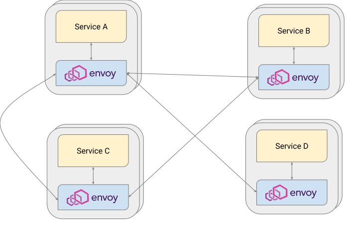
{kind=link}
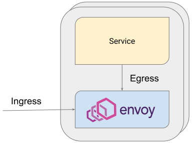
Envoy is used in a variety of configurations beyond the service mesh. For example, it can also act as an internal load balancer:
{kind=link}
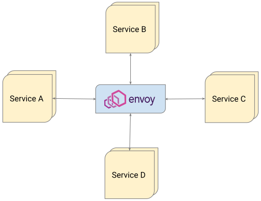
Or as an ingress/egress proxy on the network edge:
{kind=link}
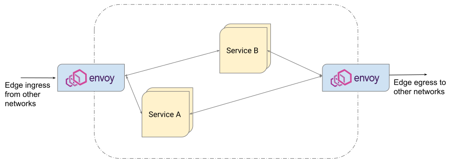
In practice, a hybrid of these is often used, where Envoy features in a service mesh, on the edge and as an internal load balancer. A request path may traverse multiple Envoys.
{kind=link}
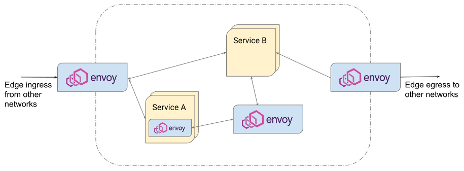
Envoy may be configured in multi-tier topologies for scalability and reliability, with a request first passing through an edge Envoy prior to passing through a second Envoy tier:
{kind=link}
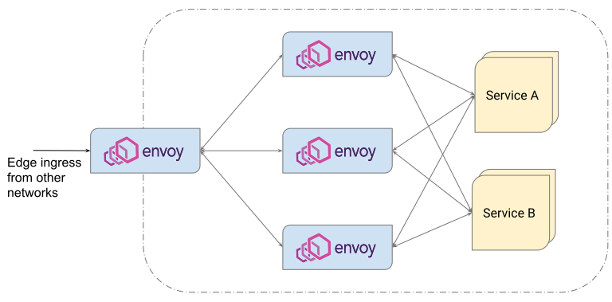
In all the above cases, a request will arrive at a specific Envoy via TCP, UDP or Unix domain sockets from downstream. Envoy will forward requests upstream via TCP, UDP or Unix domain sockets. We focus on a single Envoy proxy below.
Configuration
Envoy is a very extensible platform. This results in a combinatorial explosion of possible request paths, depending on:
L3/4 protocol, e.g. TCP, UDP, Unix domain sockets.
L7 protocol, e.g. HTTP/1, HTTP/2, HTTP/3, gRPC, Thrift, Dubbo, Kafka, Redis and various databases.
Transport socket, e.g. plain text, TLS, ALTS.
Connection routing, e.g. PROXY protocol, original destination, dynamic forwarding.
Authentication and authorization.
Circuit breakers and outlier detection configuration and activation state.
Many other configurations for networking, HTTP, listener, access logging, health checking, tracing and stats extensions.
It’s helpful to focus on one at a time, so this example covers the following:
An HTTP/2 request with TLS over a TCP connection for both downstream and upstream.
The HTTP connection manager as the only network filter.
A hypothetical CustomFilter and the router filter as the HTTP filter chain.
A single cluster with static endpoints.
We assume a static bootstrap configuration file for simplicity:
static_resources:
listeners:
# There is a single listener bound to port 443.
- name: listener_https
address:
socket_address:
protocol: TCP
address: 0.0.0.0
port_value: 443
# A single listener filter exists for TLS inspector.
listener_filters:
- name: "envoy.filters.listener.tls_inspector"
typed_config:
"@type": type.googleapis.com/envoy.extensions.filters.listener.tls_inspector.v3.TlsInspector
# On the listener, there is a single filter chain that matches SNI for acme.com.
filter_chains:
- filter_chain_match:
# This will match the SNI extracted by the TLS Inspector filter.
server_names: ["acme.com"]
# Downstream TLS configuration.
transport_socket:
name: envoy.transport_sockets.tls
typed_config:
"@type": type.googleapis.com/envoy.extensions.transport_sockets.tls.v3.DownstreamTlsContext
common_tls_context:
tls_certificates:
- certificate_chain: {filename: "certs/servercert.pem"}
private_key: {filename: "certs/serverkey.pem"}
filters:
# The HTTP connection manager is the only network filter.
- name: envoy.filters.network.http_connection_manager
typed_config:
"@type": type.googleapis.com/envoy.extensions.filters.network.http_connection_manager.v3.HttpConnectionManager
stat_prefix: ingress_http
use_remote_address: true
http2_protocol_options:
max_concurrent_streams: 100
# File system based access logging.
access_log:
- name: envoy.access_loggers.file
typed_config:
"@type": type.googleapis.com/envoy.extensions.access_loggers.file.v3.FileAccessLog
path: "/var/log/envoy/access.log"
# The route table, mapping /foo to some_service.
route_config:
name: local_route
virtual_hosts:
- name: local_service
domains: ["acme.com"]
routes:
- match:
path: "/foo"
route:
cluster: some_service
# CustomFilter and the HTTP router filter are the HTTP filter chain.
http_filters:
- name: envoy.filters.http.router
typed_config:
"@type": type.googleapis.com/envoy.extensions.filters.http.router.v3.Router
clusters:
- name: some_service
# Upstream TLS configuration.
transport_socket:
name: envoy.transport_sockets.tls
typed_config:
"@type": type.googleapis.com/envoy.extensions.transport_sockets.tls.v3.UpstreamTlsContext
load_assignment:
cluster_name: some_service
# Static endpoint assignment.
endpoints:
- lb_endpoints:
- endpoint:
address:
socket_address:
address: 10.1.2.10
port_value: 10002
- endpoint:
address:
socket_address:
address: 10.1.2.11
port_value: 10002
typed_extension_protocol_options:
envoy.extensions.upstreams.http.v3.HttpProtocolOptions:
"@type": type.googleapis.com/envoy.extensions.upstreams.http.v3.HttpProtocolOptions
explicit_http_config:
http2_protocol_options:
max_concurrent_streams: 100
- name: some_statsd_sink
# The rest of the configuration for statsd sink cluster.
# statsd sink.
stats_sinks:
- name: envoy.stat_sinks.statsd
typed_config:
"@type": type.googleapis.com/envoy.config.metrics.v3.StatsdSink
tcp_cluster_name: some_statsd_sink
High level architecture
The request processing path in Envoy has two main parts:
Listener subsystem which handles downstream request processing. It is also responsible for managing the downstream request lifecycle and for the response path to the client. The downstream HTTP/2 codec lives here.
Cluster subsystem which is responsible for selecting and configuring the upstream connection to an endpoint. This is where knowledge of cluster and endpoint health, load balancing and connection pooling exists. The upstream HTTP/2 codec lives here.
The two subsystems are bridged with the HTTP router filter, which forwards the HTTP request from downstream to upstream.
{kind=link}
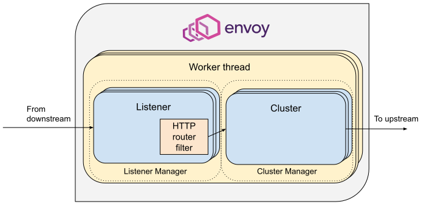
We use the terms listener subsystem and cluster subsystem above to refer to the group of modules and instance classes that
are created by the top level ListenerManager and ClusterManager classes. There are many
components that we discuss below that are instantiated before and during the course of a request by
these management systems, for example listeners, filter chains, codecs, connection pools and load
balancing data structures.
Envoy has an event-based thread model. A main thread is responsible for the server lifecycle, configuration processing, stats, etc. and some number of worker threads process requests. All threads operate around an event loop (libevent) and any given downstream TCP connection (including all the multiplexed streams on it) will be handled by exactly one worker thread for its lifetime. Each worker thread maintains its own pool of TCP connections to upstream endpoints. UDP handling makes use of SO_REUSEPORT to have the kernel consistently hash the source/destination IP:port tuples to the same worker thread. UDP filter state is shared for a given worker thread, with the filter responsible for providing session semantics as needed. This is in contrast to the connection oriented TCP filters we discuss below, where filter state exists on a per connection and, in the case of HTTP filters, per-request basis.
Worker threads rarely share state and operate in a trivially parallel fashion. This threading model enables scaling to very high core count CPUs.
Request flow
Overview
A brief outline of the life cycle of a request and response using the example configuration above:
A TCP connection from downstream is accepted by an Envoy listener running on a worker thread.
The listener filter chain is created and runs. It can provide SNI and other pre-TLS info. Once completed, the listener will match a network filter chain. Each listener may have multiple filter chains which match on some combination of destination IP CIDR range, SNI, ALPN, source ports, etc. A transport socket, in our case the TLS transport socket, is associated with this filter chain.
On network reads, the TLS transport socket decrypts the data read from the TCP connection to a decrypted data stream for further processing.
The network filter chain is created and runs. The most important filter for HTTP is the HTTP connection manager, which is the last network filter in the chain.
The HTTP/2 codec in HTTP connection manager deframes and demultiplexes the decrypted data stream from the TLS connection to a number of independent streams. Each stream handles a single request and response.
For each HTTP stream, an Downstream HTTP filter chain is created and runs. The request first passes through CustomFilter which may read and modify the request. The most important HTTP filter is the router filter which sits at the end of the HTTP filter chain. When
decodeHeadersis invoked on the router filter, the route is selected and a cluster is picked. The request headers on the stream are forwarded to an upstream endpoint in that cluster. The router filter obtains an HTTP connection pool from the cluster manager for the matched cluster to do this.Cluster specific load balancing is performed to find an endpoint. The cluster’s circuit breakers are checked to determine if a new stream is allowed. A new connection to the endpoint is created if the endpoint’s connection pool is empty or lacks capacity.
For each stream an Upstream HTTP filter chain is created and runs. By default this only includes the CodecFilter, sending data to the appropriate codec, but if the cluster is configured with an upstream HTTP filter chain, that filter chain will be created and run on each stream, which includes creating and running separate filter chains for retries and shadowed requests.
The upstream endpoint connection’s HTTP/2 codec multiplexes and frames the request’s stream with any other streams going to that upstream over a single TCP connection.
The upstream endpoint connection’s TLS transport socket encrypts these bytes and writes them to a TCP socket for the upstream connection.
The request, consisting of headers, and optional body and trailers, is proxied upstream, and the response is proxied downstream. The response passes through the HTTP filters in the opposite order from the request, starting at the codec filter, traversing any upstream HTTP filters, then going through the router filter and passing through CustomFilter, before being sent downstream.
If independent half-close is enabled the stream is destroyed after both request and response are complete (END_STREAM for the HTTP/2 stream is observed in both directions) AND response has success (2xx) status code. Otherwise the stream is destroyed when the response is complete, even if the request has not yet completed. Post-request processing will update stats, write to the access log and finalize trace spans.
We elaborate on each of these steps in the sections below.
1. Listener TCP accept
{kind=link}
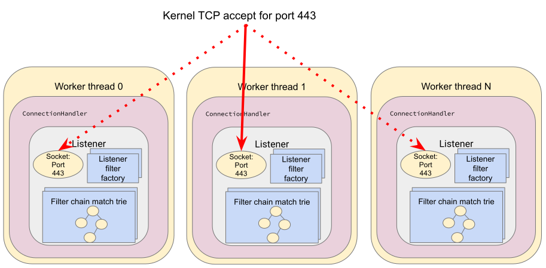
The ListenerManager is responsible for taking configuration representing listeners and instantiating a number of Listener instances bound to their respective IP/ports. Listeners may be in one of three states:
Warming: the listener is waiting for configuration dependencies (e.g. route configuration, dynamic secrets). The listener is not yet ready to accept TCP connections.
Active: the listener is bound to its IP/port and accepts TCP connections.
Draining: the listener no longer accepts new TCP connections while its existing TCP connections are allowed to continue for a drain period.
Each worker thread maintains its own Listener instance for each
of the configured listeners. Each listener may bind to the same port via SO_REUSEPORT or share a
single socket bound to this port. When a new TCP connection arrives, the kernel decides which
worker thread will accept the connection and the Listener for this worker thread will have its
Server::ConnectionHandlerImpl::ActiveTcpListener::onAccept() callback invoked.
2. Listener filter chains and network filter chain matching
The worker thread’s Listener then creates and runs the listener filter chain. Filter chains are created by applying each filter’s filter factory. The factory is aware of the filter’s configuration and creates a new instance of the filter for each connection or stream.
In the case of our TLS listener configuration, the listener filter chain consists of the TLS
inspector filter
(envoy.filters.listener.tls_inspector). This filter examines the initial TLS handshake and
extracts the server name (SNI). The SNI is then made available for filter chain matching. While the
TLS inspector appears explicitly in the listener filter chain configuration, Envoy is also capable
of inserting this automatically whenever there is a need for SNI (or ALPN) in a listener’s filter
chain.
{kind=link}
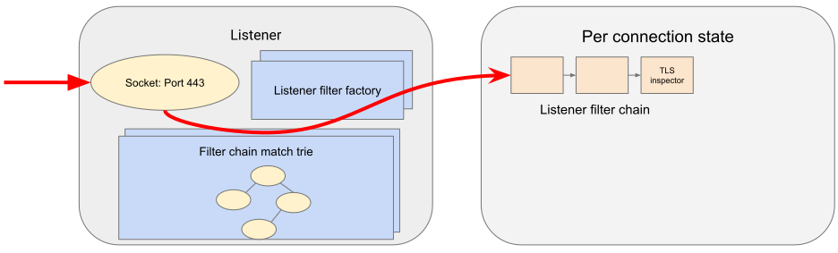
The TLS inspector filter implements the ListenerFilter
interface. All filter interfaces, whether listener or network/HTTP, require that filters implement
callbacks for specific connection or stream events. In the case of ListenerFilter, this is:
virtual FilterStatus onAccept(ListenerFilterCallbacks& cb) PURE;
onAccept() allows a filter to run during the TCP accept processing. The FilterStatus
returned by the callback controls how the listener filter chain will continue. Listener filters may
pause the filter chain and then later resume, e.g. in response to an RPC made to another service.
Information extracted from the listener filters and connection properties is then used to match a filter chain, giving the network filter chain and transport socket that will be used to handle the connection.
{kind=link}
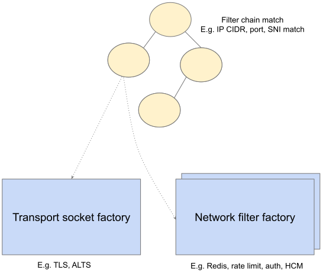
3. TLS transport socket decryption
Envoy offers pluggable transport sockets via the TransportSocket extension interface. Transport sockets follow the lifecycle events of a TCP connection and read/write into network buffers. Some key methods that transport sockets must implement are:
virtual void onConnected() PURE;
virtual IoResult doRead(Buffer::Instance& buffer) PURE;
virtual IoResult doWrite(Buffer::Instance& buffer, bool end_stream) PURE;
virtual void closeSocket(Network::ConnectionEvent event) PURE;
When data is available on a TCP connection, Network::ConnectionImpl::onReadReady() invokes the
TLS transport socket via SslSocket::doRead(). The transport socket
then performs a TLS handshake on the TCP connection. When the handshake completes,
SslSocket::doRead() provides a decrypted byte stream to an instance of
Network::FilterManagerImpl, responsible for managing the network filter chain.
{kind=link}
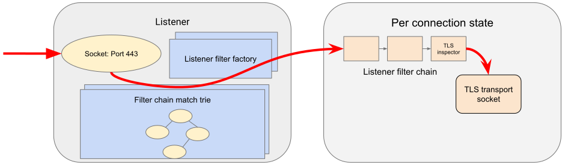
It’s important to note that no operation, whether it’s a TLS handshake or a pause of a filter pipeline is truly blocking. Since Envoy is event-based, any situation in which processing requires additional data will lead to early event completion and yielding of the CPU to another event. When the network makes more data available to read, a read event will trigger the resumption of a TLS handshake.
4. Network filter chain processing
As with the listener filter chain, Envoy, via Network::FilterManagerImpl, will instantiate a
series of network filters from their filter factories. The
instance is fresh for each new connection. Network filters, like transport sockets, follow TCP
lifecycle events and are invoked as data becomes available from the transport socket.
{kind=link}
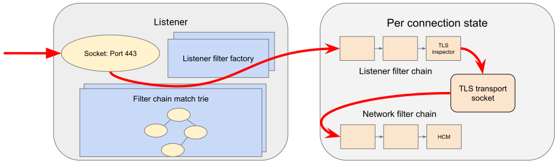
Network filters are composed as a pipeline, unlike transport sockets which are one-per-connection. Network filters come in three varieties:
ReadFilter implementing
onData(), called when data is available from the connection (due to some request).WriteFilter implementing
onWrite(), called when data is about to be written to the connection (due to some response).Filter implementing both ReadFilter and WriteFilter.
The method signatures for the key filter methods are:
virtual FilterStatus onNewConnection() PURE;
virtual FilterStatus onData(Buffer::Instance& data, bool end_stream) PURE;
virtual FilterStatus onWrite(Buffer::Instance& data, bool end_stream) PURE;
As with the listener filter, the FilterStatus allows filters to pause execution of the filter
chain. For example, if a rate limiting service needs to be queried, a rate limiting network filter
would return Network::FilterStatus::StopIteration from onData() and later invoke
continueReading() when the query completes.
The last network filter for a listener dealing with HTTP is HTTP connection manager (HCM). This is responsible for creating the HTTP/2 codec and managing the HTTP filter chain. In our example, this is the only network filter. An example network filter chain making use of multiple network filters would look like:
{kind=link}
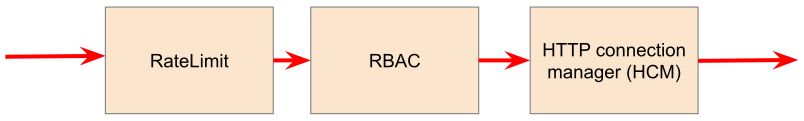
On the response path, the network filter chain is executed in the reverse order to the request path.

5. HTTP/2 codec decoding
The HTTP/2 codec in Envoy is based on nghttp2. It is invoked by the HCM with plaintext bytes from the TCP connection (after network filter chain transformation). The codec decodes the byte stream as a series of HTTP/2 frames and demultiplexes the connection into a number of independent HTTP streams. Stream multiplexing is a key feature in HTTP/2, providing significant performance advantages over HTTP/1. Each HTTP stream handles a single request and response.
The codec is also responsible for handling HTTP/2 setting frames and both stream and connection level flow control.
The codecs are responsible for abstracting the specifics of the HTTP connection, presenting a standard view to the HTTP connection manager and HTTP filter chain of a connection split into streams, each with request/response headers/body/trailers. This is true regardless of whether the protocol is HTTP/1, HTTP/2 or HTTP/3.
6. HTTP filter chain processing
For each HTTP stream, the HCM instantiates an Downstream HTTP filter chain, following the pattern established above for listener and network filter chains.

There are three kinds of HTTP filter interfaces:
StreamDecoderFilter with callbacks for request processing.
StreamEncoderFilter with callbacks for response processing.
StreamFilter implementing both
StreamDecoderFilterandStreamEncoderFilter.
Looking at the decoder filter interface:
virtual FilterHeadersStatus decodeHeaders(RequestHeaderMap& headers, bool end_stream) PURE;
virtual FilterDataStatus decodeData(Buffer::Instance& data, bool end_stream) PURE;
virtual FilterTrailersStatus decodeTrailers(RequestTrailerMap& trailers) PURE;
Rather than operating on connection buffers and events, HTTP filters follow the lifecycle of an HTTP
request, e.g. decodeHeaders() takes HTTP headers as an argument rather than a byte buffer. The
returned FilterStatus provides, as with network and listener filters, the ability to manage filter
chain control flow.
When the HTTP/2 codec makes available the HTTP requests headers, these are first passed to
decodeHeaders() in CustomFilter. If the returned FilterHeadersStatus is Continue, HCM
then passes the headers (possibly mutated by CustomFilter) to the router filter.
Decoder and encoder-decoder filters are executed on the request path. Encoder and encoder-decoder filters are executed on the response path, in reverse direction. Consider the following example filter chain:
{kind=link}
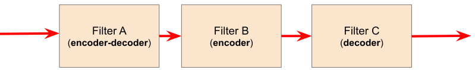
The request path will look like:
{kind=link}
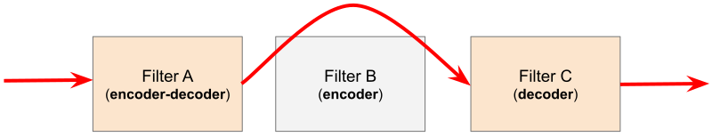
While the response path will look like:
{kind=link}
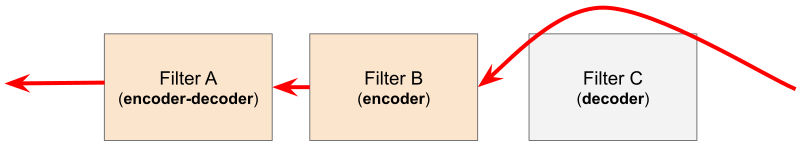
When decodeHeaders() is invoked on the router filter, the
route selection is finalized and a cluster is picked. The HCM selects a route from its
RouteConfiguration at the start of HTTP filter chain execution. This is referred to as the
cached route. Filters may modify headers and cause a new route to be selected, by asking HCM to
clear the route cache and requesting HCM to reevaluate the route selection. Filters may also
directly set this cached route selection via a setRoute callback. When the router filter is
invoked, the route is finalized. The selected route’s configuration will point at an upstream
cluster name. The router filter then asks the ClusterManager for an HTTP connection pool for the cluster. This involves load balancing and the connection pool,
discussed in the next section.

The resulting HTTP connection pool is used to build an UpstreamRequest object in the router, which
encapsulates the HTTP encoding and decoding callback methods for the upstream HTTP request. Once a
stream is allocated on a connection in the HTTP connection pool, the request headers are forwarded
to the upstream endpoint by the invocation of UpstreamRequest::encodeHeaders.
The router filter is responsible for all aspects of upstream request lifecycle management on the stream allocated from the HTTP connection pool. It also is responsible for request timeouts, retries and affinity.
The router filter is also responsible for the creation and running of the Upstream HTTP filter chain. By default, upstream HTTP filters will start running immediately after headers arrive at the router filter, however C++ filters can pause until the upstream connection is established if they need to inspect the upstream stream or connection. Upstream HTTP filter chains are by default configured via cluster configuration, so for example a shadowed request can have a separate upstream HTTP filter chain for the primary and shadowed clusters. Also as the upstream HTTP filter chain is upstream of the router filter, it is run per each retry attempt allowing header manipulation per retry and including information about the upstream stream and connection. Unlike downstream HTTP filters, upstream HTTP filters can not alter the route.
7. Load balancing
Each cluster has a load balancer which picks an endpoint when a new request arrives. Envoy supports a variety of load balancing algorithms, e.g. weighted round-robin, Maglev, least-loaded, random. Load balancers obtain their effective assignments from a combination of static bootstrap configuration, DNS, dynamic xDS (the CDS and EDS discovery services) and active/passive health checks. Further details on how load balancing works in Envoy are provided in the load balancing documentation.
Once an endpoint is selected, the connection pool for this endpoint is used to find a connection to forward the request on. If no connection to the host exists, or all connections are at their maximum concurrent stream limit, a new connection is established and placed in the connection pool, unless the circuit breaker for maximum connections for the cluster has tripped. If a maximum lifetime stream limit for a connection is configured and reached, a new connection is allocated in the pool and the affected HTTP/2 connection is drained. Other circuit breakers, e.g. maximum concurrent requests to a cluster are also checked. See circuit breakers and connection pools for further details.

8. HTTP/2 codec encoding
The selected connection’s HTTP/2 codec multiplexes the request stream with any other streams going to the same upstream over a single TCP connection. This is the reverse of HTTP/2 codec decoding.
As with the downstream HTTP/2 codec, the upstream codec is responsible for taking Envoy’s standard abstraction of HTTP, i.e. multiple streams multiplexed on a single connection with request/response headers/body/trailers, and mapping this to the specifics of HTTP/2 by generating a series of HTTP/2 frames.
9. TLS transport socket encryption
The upstream endpoint connection’s TLS transport socket encrypts the bytes from the HTTP/2 codec output and writes them to a TCP socket for the upstream connection. As with TLS transport socket decryption, in our example the cluster has a transport socket configured that provides TLS transport security. The same interfaces exist for upstream and downstream transport socket extensions.
{kind=link}
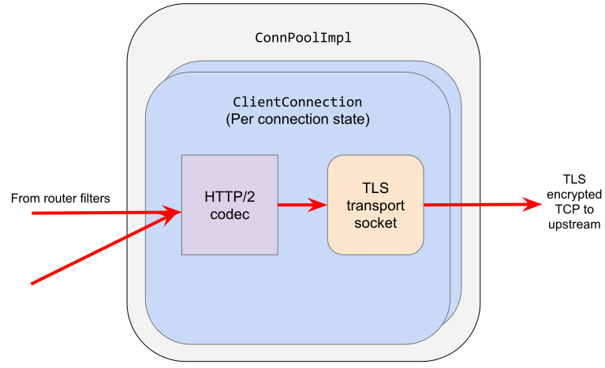
10. Response path and HTTP lifecycle
The request, consisting of headers, and optional body and trailers, is proxied upstream, and the response is proxied downstream. The response passes through the HTTP and network filters in the opposite order from the request.
Various callbacks for decoder/encoder request lifecycle events will be invoked in HTTP filters, e.g. when response trailers are being forwarded or the request body is streamed. Similarly, read/write network filters will also have their respective callbacks invoked as data continues to flow in both directions during a request.
Outlier detection status for the endpoint is revised as the request progresses.
The point at which the proxying completes and the stream is destroyed for HTTP/2 and HTTP/3 protocols
is determined by the independent half-close option. If independent half-close is enabled the stream
is destroyed after both request and response are complete i.e. reach their respective end-of-stream,
by receiving trailers or the header/body with end-stream set in both directions AND response has
success (2xx) status code. This is handled in FilterManager::checkAndCloseStreamIfFullyClosed().
For HTTP/1 protocol or if independent half-close is disabled the stream is destroyed when the response
is complete and reaches its end-of-stream, i.e. when trailers or the response header/body with
end-stream set are received, even if the request has not yet completed. This is handled in
Router::Filter::onUpstreamComplete().
It is possible for a request to terminate early. This may be due to (but not limited to):
Request timeout.
Upstream endpoint stream reset.
HTTP filter stream reset.
Circuit breaking.
Unavailability of upstream resources, e.g. missing a cluster for a route.
No healthy endpoints.
DoS protection.
HTTP protocol violations.
Local reply from either the HCM or an HTTP filter. E.g. a rate limit HTTP filter returning a 429 response.
If any of these occur, Envoy may either send an internally generated response, if upstream response headers have not yet been sent, or will reset the stream, if response headers have already been forwarded downstream. The Envoy debugging FAQ has further information on interpreting these early stream terminations.
11. Post-request processing
Once a request completes, the stream is destroyed. The following also takes places:
The post-request statistics are updated (e.g. timing, active requests, upgrades, health checks). Some statistics are updated earlier however, during request processing. Stats are not written to the stats sink at this point, they are batched and written by the main thread periodically. In our example this is a statsd sink.
Access logs are written to the access log sinks. In our example this is a file access log.
Trace spans are finalized. If our example request was traced, a trace span, describing the duration and details of the request would be created by the HCM when processing request headers and then finalized by the HCM during post-request processing.